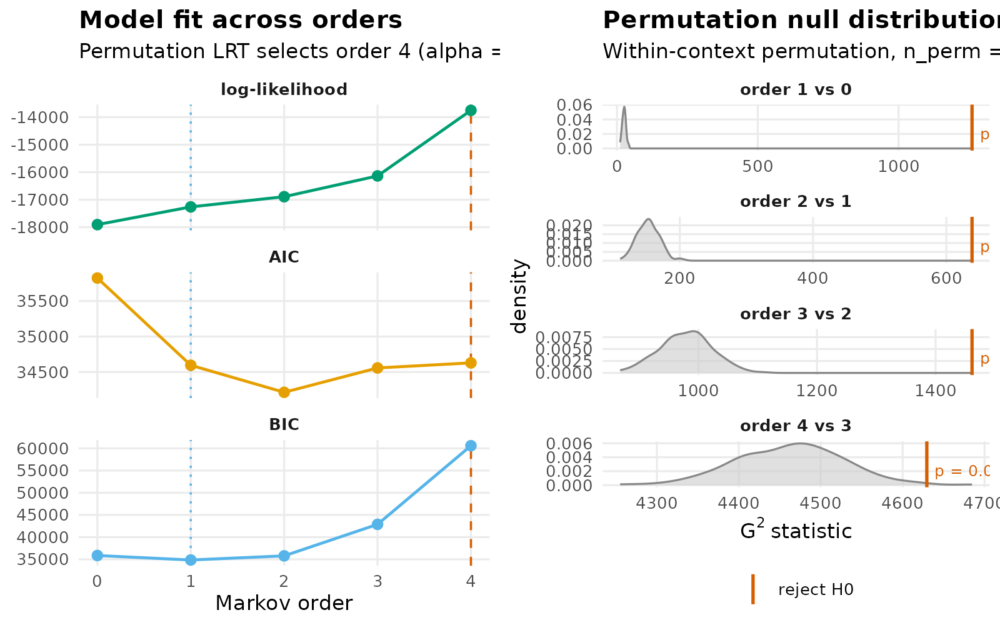
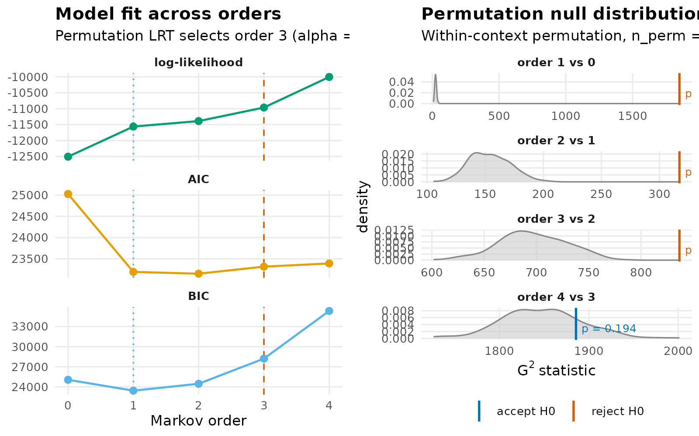
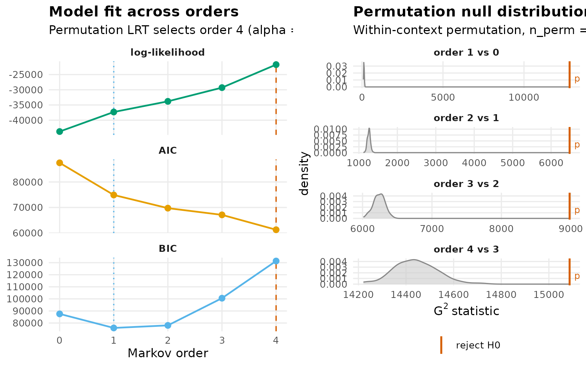

Markov-order adequacy in heterogeneous transition networks
Source:vignettes/markov-order.Rmd
markov-order.RmdA first-order Markov network represents the transition probability between consecutive states under the assumption that the next state depends only on the current state and not on any earlier ones. This assumption is convenient — it reduces a temporal process to a square transition matrix and supports the entire htna analytic stack — but it is also empirical. For some corpora, the data demand a higher order: the next state depends jointly on the current and on one or more preceding states, and a first-order model misrepresents the dependence structure.
markov_order_test_htna() quantifies that demand. For a
fixed range of candidate orders, it fits a separate Markov model at each
order to the empirical sequences, computes the log-likelihood, and tests
whether each successive increase in order yields a statistically
significant improvement over the lower order via a permutation test on
the deviance statistic. The reported optimal order is the largest order
at which the test rejects equivalence to its predecessor.
In a heterogeneous setting (where two or more actors interleave in the same session) the question gains an additional dimension. The optimal order computed on the combined sequences is a property of the joint Human-AI process. The optimal orders computed on the per-actor sequences (extracting only one actor’s events from each session) are properties of each actor’s own process. The two are not guaranteed to agree. When they disagree, the disagreement is substantive: it locates the temporal dependence in one actor’s behaviour rather than in the joint dynamics.
This vignette runs the test under three slicings of the example Human-AI corpus and compares the resulting optimal orders.
Data and three slicings
The example uses the bundled human_ai corpus – Human +
AI events in a single long frame, tagged by an actor_type
column (see ?human_ai). Three sequence sets are
constructed:
- Human-only: each session restricted to its Human events, preserving order.
- AI-only: each session restricted to its AI events, preserving order.
- Combined: the original interleaved Human + AI sequence per session.
Sessions shorter than three events do not inform tests beyond order-1 and are excluded from each set.
library(htna)
data(human_ai)
# Within each session, restore chronological order (the bundled
# dataset is sorted by project + step, which interleaves sessions).
human_ai <- human_ai[order(human_ai$session_id,
human_ai$order_in_session), ]
is_h <- human_ai$actor_type == "Human"
human_seqs <- split(human_ai$code[is_h], human_ai$session_id[is_h])
human_seqs <- human_seqs[lengths(human_seqs) >= 3L]
is_a <- human_ai$actor_type == "AI"
ai_seqs <- split(human_ai$code[is_a], human_ai$session_id[is_a])
ai_seqs <- ai_seqs[lengths(ai_seqs) >= 3L]
combined_seqs <- split(human_ai$code, human_ai$session_id)
combined_seqs <- combined_seqs[lengths(combined_seqs) >= 3L]
c(human = length(human_seqs),
ai = length(ai_seqs),
combined = length(combined_seqs))
#> human ai combined
#> 423 416 427Human sequences
The Human-only test asks whether the temporal dependence among Human codes extends beyond order-1. The hypothesis at each order k is that order-(k-1) is sufficient against the alternative that order-k captures additional structure.
mo_h <- markov_order_test_htna(
human_seqs,
max_order = 4L,
n_perm = 200L,
seed = 1L
)
mo_h$test_table
#> order loglik AIC BIC df g2 p_permutation p_asymptotic
#> 1 0 -17907.30 35824.60 35861.03 NA NA NA NA
#> 2 1 -17262.70 34595.39 34850.41 25 1260.7611 0.004975124 1.978771e-250
#> 3 2 -16892.01 34214.01 35780.55 150 638.5035 0.004975124 1.782493e-61
#> 4 3 -16136.73 34557.47 42878.30 900 1461.4352 0.004975124 2.008114e-29
#> 5 4 -13751.30 34628.60 60589.30 4111 4629.4962 0.009950249 1.884830e-08
#> significant
#> 1 NA
#> 2 TRUE
#> 3 TRUE
#> 4 TRUE
#> 5 TRUE
mo_h$optimal_order
#> [1] 4
plot(mo_h)
AI sequences
The AI-only test asks the same question of the AI codes
independently, on the same scale of max_order and number of
permutations. The result does not depend on the Human sequences and is
therefore directly comparable to the Human result.
mo_a <- markov_order_test_htna(
ai_seqs,
max_order = 4L,
n_perm = 200L,
seed = 1L
)
mo_a$test_table
#> order loglik AIC BIC df g2 p_permutation p_asymptotic
#> 1 0 -12507.50 25025.00 25060.26 NA NA NA NA
#> 2 1 -11561.26 23192.52 23439.32 25 1851.6662 0.004975124 0.000000e+00
#> 3 2 -11388.43 23150.86 24469.46 150 317.0789 0.004975124 5.088532e-14
#> 4 3 -10962.98 23315.97 28216.65 675 836.7299 0.004975124 1.976688e-05
#> 5 4 -10002.71 23391.42 35329.35 1761 1885.6450 0.194029851 1.951552e-02
#> significant
#> 1 NA
#> 2 TRUE
#> 3 TRUE
#> 4 TRUE
#> 5 FALSE
mo_a$optimal_order
#> [1] 3
plot(mo_a)
Combined sequences
The combined test treats the interleaved Human-AI sequence as a single process over the union of state vocabularies. Higher-order dependence in this view can arise from within-actor structure (captured by the per-actor tests) or from cross-actor dependence (an AI code reliably following a particular Human code or vice versa) that the per-actor tests cannot see.
mo_c <- markov_order_test_htna(
combined_seqs,
max_order = 4L,
n_perm = 200L,
seed = 1L
)
mo_c$test_table
#> order loglik AIC BIC df g2 p_permutation p_asymptotic
#> 1 0 -43738.00 87498.01 87584.58 NA NA NA NA
#> 2 1 -37312.20 74892.39 75946.99 121 12815.693 0.004975124 0.000000e+00
#> 3 2 -33808.86 69731.72 78050.45 1272 6481.756 0.004975124 0.000000e+00
#> 4 3 -29294.11 67098.21 100585.65 7242 8982.768 0.004975124 1.533371e-41
#> 5 4 -21727.12 61270.24 131377.42 16296 15087.014 0.004975124 1.000000e+00
#> significant
#> 1 NA
#> 2 TRUE
#> 3 TRUE
#> 4 TRUE
#> 5 TRUE
mo_c$optimal_order
#> [1] 4
plot(mo_c)
Comparative interpretation
The three optimal orders, considered together, partition the temporal dependence in the corpus across actors and across the joint process. Four interpretive cases are worth distinguishing:
| Pattern | Interpretation |
|---|---|
| All three optimal orders ≈ 1 | First-order htna network is well-specified; both actors and their interaction are memoryless at the resolution of this test. |
| Combined > both per-actor | The joint process carries dependence that neither actor’s behaviour explains in isolation. The temporal structure resides in cross-actor coupling — turn-taking, response patterns, action-reaction loops. |
| One per-actor > the other and ≥ combined | The actor with the higher order is the one with internal long-range dependence. Their behaviour at step t depends on multiple prior steps of their own history, regardless of what the other actor did. |
| Per-actor orders ≥ combined | The per-actor processes individually carry more memory than their interleaved joint process. This is unusual and typically indicates that the combined sequence dilutes within-actor structure by alternating actors. |
Empirically, on the example corpus the Human-only optimal order is
4 and the AI-only optimal order is 3.
The combined optimal order is 4. All three saturate at
the upper bound of the search (see the next section), so the test cannot
distinguish which process carries the deepest internal memory at this
max_order — only that none of them is consistent with a
first-order assumption. The default htna network is therefore a
structural simplification of these data, even if it remains analytically
useful for descriptive and relational claims.
A note on optimal_order saturating at
max_order
When all tested orders show significant improvement over their
predecessor — as in this example — the reported
optimal_order equals the upper bound of the search
(max_order). This is not the “true” optimal order; it is
the largest order tested. To probe whether higher orders would still
improve fit, increase max_order. The trade-off is
computational: the number of parameters at order k is
approximately
,
where
is the size of the state alphabet, so each step roughly multiplies
fitting cost by the alphabet size.
Practical recipe
- Run the test at
max_order = 3initially as a coarse screen. - If the optimal order saturates at the upper bound, increase
max_orderuntil the test reports a non-significant step. - For heterogeneous corpora, compute the test on per-actor and combined sequences separately, and consult the comparative table above.
- If
optimal_order = 1for the combined process, the htna first-order network is well-specified for the corpus. - If
optimal_order > 1for the combined process butoptimal_order = 1for each actor in isolation, the higher-order structure resides in cross-actor coupling. The first-order htna network captures aggregate transition patterns but understates the temporal coordination between actors. - If
optimal_order > 1per-actor, the first-order htna network is structurally simplifying the dependence. The next section surveys principled alternatives.
Alternatives when the first-order assumption is rejected
htna is a focused subset of the Nestimate ecosystem and does not
implement higher-order or non-Markovian network models directly. When
markov_order_test_htna() indicates that the first-order
assumption is inadequate, the analysis proceeds by constructing the
appropriate alternative model in Nestimate or, for selected variants, in
tna. The choice of alternative is determined by the
mechanism through which the first-order assumption fails.
Higher-order Markov networks
If the rejection of order-1 reflects genuine dependence of the next state on multiple preceding states, a higher-order Markov network is the appropriate generalisation. Several constructors in Nestimate implement higher-order models under different encodings of the memory:
| Function | Description |
|---|---|
Nestimate::build_hon() |
Higher-order network constructed by introducing explicit memory nodes for sequences whose transition probabilities deviate from the first-order baseline. Appropriate when the optimal order is 2 or 3 and the analysis benefits from an explicit memory representation in the graph. |
Nestimate::build_honem() |
Higher-order network with memory encoded on edges rather than as expanded nodes. Yields a graph of the same node cardinality as the first-order network, with the trade-off that memory information is no longer locally readable from individual nodes. |
Nestimate::build_hypa() |
Higher-order network restricted to memory effects that are significant against a hypergeometric null model. Reduces the risk of over-fitting that arises when high-order transitions are estimated from limited data. |
Nestimate::build_mogen() |
Multi-order generative model in which the order is selected per node rather than fixed globally. Appropriate when memory depth is heterogeneous across states. |
hon <- Nestimate::build_hon(combined_seqs, max_order = 2L)The actor partition carried by an htna network is not preserved on higher-order objects, because the partition is defined on single-state nodes whereas higher-order models extend the node set with memory configurations that have no direct actor identity. Downstream analyses on a higher-order network therefore proceed without partition-aware visualisation.
Markov mixture models
A second mechanism by which the first-order test may reject the null
is corpus heterogeneity: the sample comprises several distinct
first-order processes whose mixture exhibits apparent higher-order
structure even though no individual process does. The
Nestimate::build_mmm() constructor estimates a
k-component mixture of first-order chains and assigns each
session probabilistically to a component.
| Function | Description |
|---|---|
Nestimate::build_mmm() |
Mixture of k first-order Markov chains with EM-based estimation. Each session receives posterior probabilities of membership in each component. Diagnostic of mixture rather than higher-order structure: the per-session log-likelihood improvement under a higher-order model is concentrated in a subset of sessions rather than uniformly distributed across the corpus. |
mmm <- Nestimate::build_mmm(combined_seqs, k = 3L)TNA-family alternatives
Some apparent rejections of order-1 reflect not a Markov-order problem but a transition-aggregation problem: the empirical transitions exist but are weighted, thresholded, or attended to in ways that the first-order relative-probability scheme does not express. The family of estimations re-defines the transition matrix under alternative aggregation rules without invoking higher-order memory.
| Method | Description |
|---|---|
method = "attention" |
Attention-weighted transition network. Each transition is weighted by an attention coefficient that decays with sequential distance, yielding a continuous interpolation between first-order and longer-range coupling. |
method = "frequency" |
Frequency-thresholded transition network. Transitions below a configurable count are removed before estimation, restricting the model to a structurally robust subgraph. Appropriate when the first-order test passes overall but the network is dominated by sparse, low-evidence edges. |
These methods address the modelling-specification question (“what transition matrix represents this corpus?”) rather than the order-adequacy question (“does this corpus require memory?”). They are therefore complementary to the higher-order constructors above rather than substitutes for them.
Diagnostic summary
Diagnostic from markov_order_test_htna()
|
Indicated next step |
|---|---|
| Optimal order = 1 across all slicings | First-order htna network is well-specified; no model change is indicated. |
| Optimal order > 1 in the combined process only | Cross-actor coupling carries dependence absent from each actor in
isolation. Either retain the first-order network as a descriptive
aggregate, or estimate Nestimate::build_hon() to represent
the cross-actor memory explicitly. |
| Optimal order > 1 within one or both actors | Within-actor memory. Nestimate::build_hon() or
Nestimate::build_honem() per actor, or
Nestimate::build_mogen() when memory depth varies across
states. |
Optimal order saturates at max_order for large
max_order
|
Test the corpus-mixture hypothesis with
Nestimate::build_mmm(); high apparent order may reflect
heterogeneous components rather than long memory. |
| First-order assumption holds but edges are sparse and noisy | Aggregation-specification rather than order question:
build_htna(..., method = "frequency") to restrict to
structurally robust transitions. |
References
Saqr, M., López-Pernas, S., Törmänen, T., Kaliisa, R., Misiejuk, K., & Tikka, S. (2025). Transition network analysis: A novel framework for modeling, visualizing, and identifying the temporal patterns of learners and learning processes. Proceedings of the 15th International Learning Analytics and Knowledge Conference, 351–361. https://doi.org/10.1145/3706468.3706513
Tutz, G. (2012). Regression for categorical data series number. Cambridge University Press. https://doi.org/10.1017/cbo9780511842061